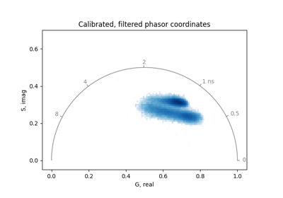
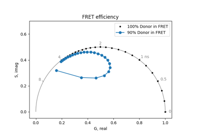
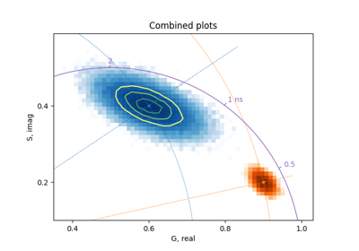
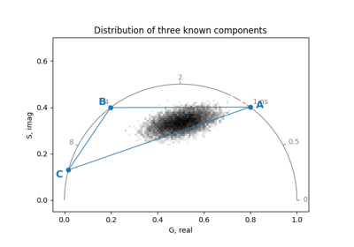

Tutorials#
A gallery of examples that showcase how the PhasorPy library can be used to analyze time-resolved and hyperspectral fluorescence images using the Phasor approach.
Some tutorials demonstrate the use of the programming interface in general, while others provide problem-oriented how-to guides for advanced applications.

Introduction to PhasorPy
LFD Workshop FLIM Tutorial
Programming interface#
Tutorials focused on using specific modules, classes, and functions:
Förster Resonance Energy Transfer
Förster Resonance Energy Transfer
Principal component analysis


Phasor coordinates from lifetimes
Phasor coordinates from lifetimes
Synthesize signals from lifetimes
Synthesize signals from lifetimes

Phasor plot

Component analysis
Applications#
Problem-oriented how-to guides for advanced applications:
Benchmarks#
Tutorials evaluating the performance of the library:

Miscellaneous#
PhasorPy logo